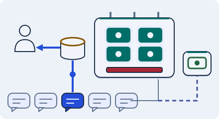

Business · 3 minutes
GPUs, tokens and fallbacks
Serving AI answers is slow and expensive, so cache, limit, and have a fallback.
Open this lesson
Costly answers
A chatbot answer needs a GPU, a chip that costs a few dollars an hour to rent (approx.) and can serve only a few conversations at once. Answers are measured in tokens, roughly three quarters of a word. Longer answers take longer and cost more, and the number of GPUs you can get is limited.
Smaller and cached
Repeated answers can skip generation. Count the uncached tokens and capacity needed to drain the batch before choosing longer answers.
Try the idea
A GPU shortage hits at noon. Add a fallback and remember repeated questions.
Key numbers
- One GPU
- ≈ $2 to $4 an hour. rented, approx.
- A short answer
- ≈ 300 tokens. about 225 words, approx.
- Model response time
- ≈ 2 to 10 s. approx.
Check your reasoning
Think through these questions before opening the lesson. In the game you can test the idea and compare your reasoning.
- Why is AI serving expensive?
- A semantic cache helps when:
- What is a good plan for a GPU shortage?
The key point
Cache, cap and fall back; GPUs are the scarcest part of the system.
Practise this idea
- Hard
Real-time fraud detection
Every card payment asks your system "is this fraud?" and wants the answer within about 150 milliseconds. Each check looks up the cardholder's recent habits and runs a model. The holiday shopping rush doubles the volume, and a bad model update can start declining honest customers.
- Easy
Semantic search
A help center lets people type a question in plain words and finds the right articles even when the words differ. Each question is turned into a list of numbers (a vector) and matched to similar articles. Many people ask the same few questions.
- Medium
Recommendations
Every page shows a row of things the visitor might like. A ranking model builds each row, but the model is slow and costly. The row must appear instantly, even when the model is having a bad day.
- Hard
Ad serving
Each page view asks you to pick the best ad in about a quarter of a second: check who is allowed to see what, score the candidates with a model, run a quick auction and answer. Every impression and click must be counted exactly because money depends on it.